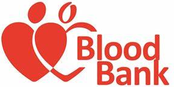

LIFE BLOOD SERVICES
Home
About Us
User Login
Admin
Request Blood
Donate Blood
Why you Need To Donate Blood:
Blood donation is a community responsibility. While you're reading this, a local patient needs blood. Blood is needed every two seconds. About one in seven people entering a hospital needs blood. Blood is always needed for treatment of accident victims, cancer patients,hemophiliacs and surgery patients. Blood cannot be manufactured. Only 37 percent of our country's population is eligible to give blood, and less than 10 percent of those who can donate actually do donate annually. What if everyone eligible to donate became complacent and decided they didn't need to donate because someone else would? What if there wasn't enough donated blood available when you, a loved one - anyone - needed it? Our blood supply comes from caring donors like you. It takes about one hour of your time. When you give blood, it gives someone another smile, another hug, another chance. It is the gift of life. Be a Hero. Give Blood.
Our Recent Events